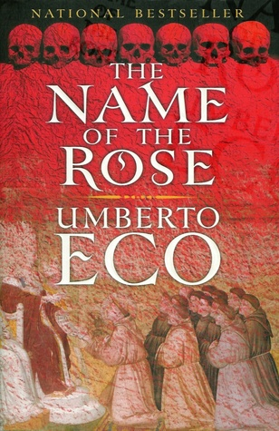
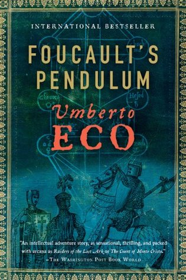
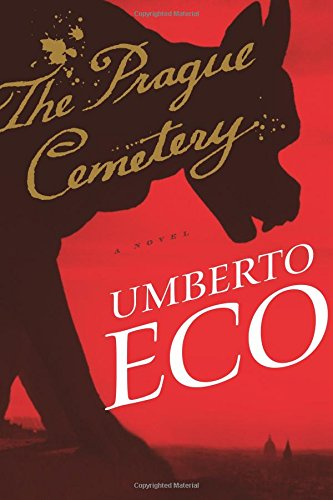
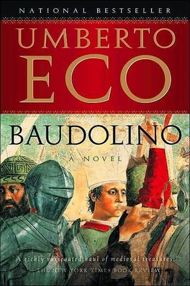
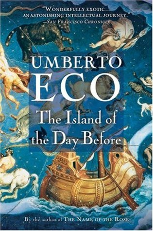
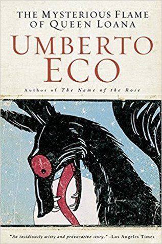
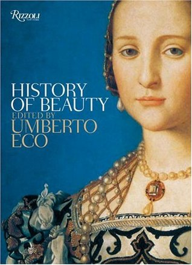
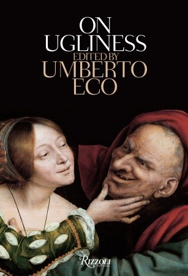

Umberto Eco
Umberto Eco was an Italian writer of fiction, essays, academic texts, and children's books. A professor of semiotics at the University of Bologna, Eco’s brilliant fiction is known for its playful use of language and symbols, its astonishing array of allusions and references, and clever use of puzzles and narrative inventions. His perceptive essays on modern culture are filled with a delightful sense of humor and irony, and his ideas on semiotics, interpretation, and aesthetics have established his reputation as one of academia’s foremost thinkers.
-
1932 Umberto Eco is born in Alessandria, in the Piemont region of Italy
-
1954 Receives BA diploma in philosophy
-
1956 Finishes his PhD. thesis on Saint Thomas Aquinas and starts to teach at the university
-
1956 Publication of first book
-
1959 Starts as editor at Bompiani publishing house in Milan
-
1962 Marries Renate Ramge
-
1977-1978 Visiting professor in the US (Yale, Columbia)
-
1980 Publishes The Name of the Rose
-
1988 Publishes Foucault's Pendulum
-
2000 Publishes Baudolino
-
2016 Umberto Eco dies at the age of 84
Books by Umberto Eco

The Name of the Rose

Foucault's Pendulum

The Prague Cemetery

Baudolino

The Island of the Day Before

The Myterious Flame of Queen Loana

The History of Beauty

On Ugliness